Mapa
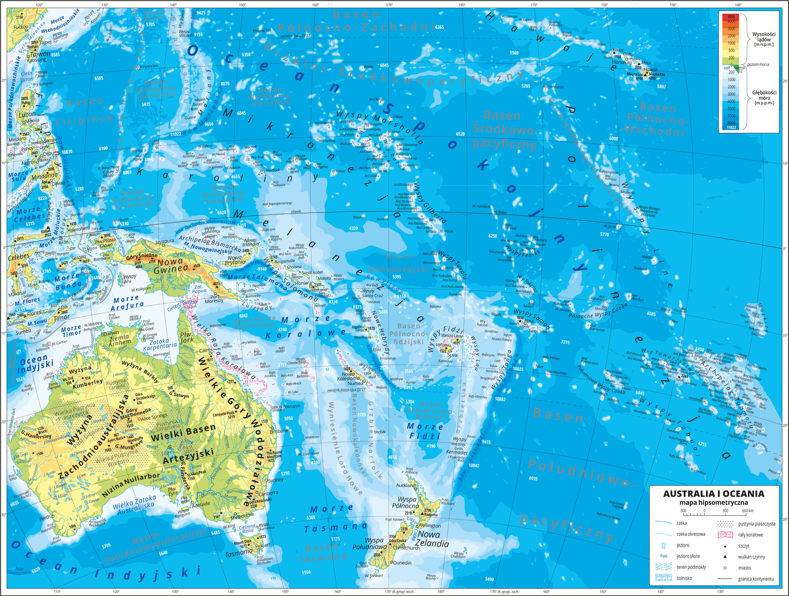
Kilka śłów o...
Australia i Oceania (w wielu państwach nazwana po prostu Oceanią) – nazwa części świata, używana w polskim nazewnictwie geograficznym, a obejmująca wyspy Oceanu Spokojnego, czyli Oceanię i kontynent Australii. Obejmuje regiony: Australazję, Melanezję, Mikronezję i Polinezję.
Pod względem politycznym obszar ten obejmuje państwo Australia wraz z przyległymi wyspami oraz państwa, terytoria i wyspiarskie fragmenty państw leżące geograficznie w Oceanii.
Podział
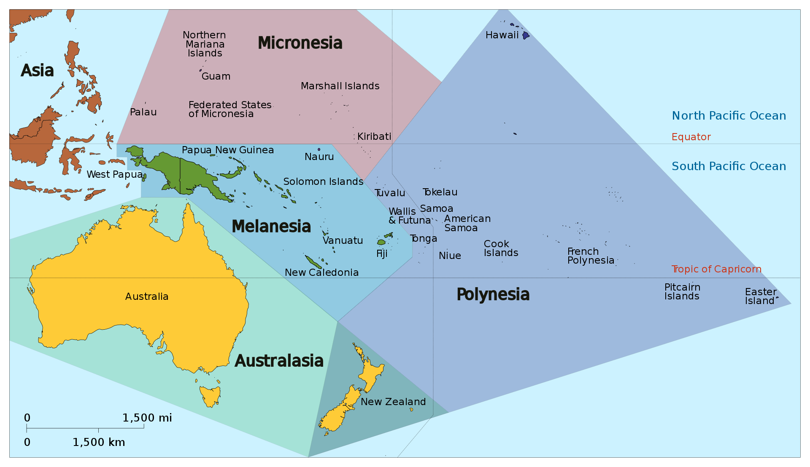
Rafa koralowa
Wielka Rafa Koralowa (ang. Great Barrier Reef) – największa na świecie rafa koralowa, położona wzdłuż północno-wschodnich wybrzeży Australii, na Morzu Koralowym. Największa na Ziemi pojedyncza struktura wytworzona przez organizmy żywe, widoczna z kosmosu jako biała smuga na tle błękitnego oceanu.
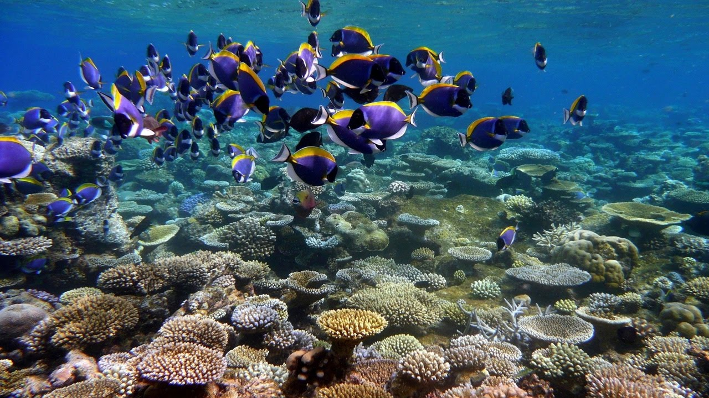
Największa skała
Uluru, Oolora (znana także pod nazwą ang. Ayers Rock oraz The Rock) – formacja skalna w centralnej części Australii, na Terytorium Północnym. Znajduje się w parku narodowym Uluru-Kata Tjuta,
niedaleko miasteczka Yulara, 400 km na południowy zachód od Alice Springs. Liczy ponad 300 m wysokości i 8 km obwodu. Przez wiele lat Uluru było uznawane za największy monolit świata. Nie jest to jednak prawdą,
gdyż monolit Mount Augustus jest ponad dwukrotnie większy. Ponadto wedle nowszych badań[1] Uluru wcale nie jest monolitem, lecz częścią większej formacji skalnej, do której należą również Kata Tjuta (Mount Olga)
i Mount Conner. Jest przykładem twardzielca.

Endemity
Na terytorium Australii żyje bardzą dużo endemitów. Są to organizmy, które naturalnie żyją tylko i wyłącznie tam. Należą do nich m.in. dziobak i kolczatka, które są jedynymi ssakami jajorodnymi na świecie.
Oto niektóre z australijskich endemitów:
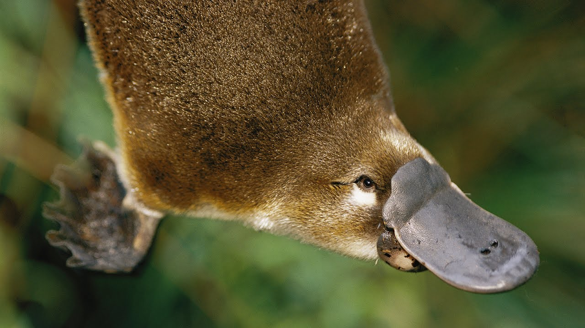
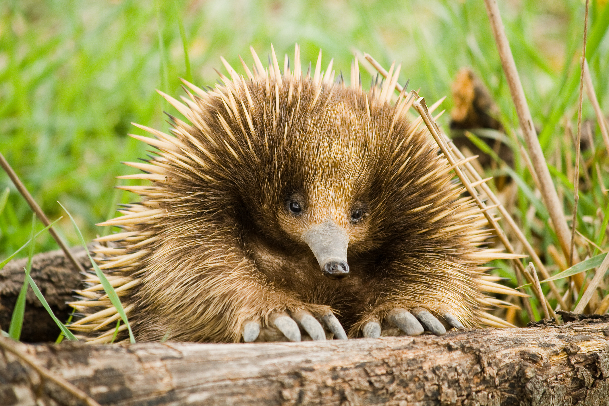
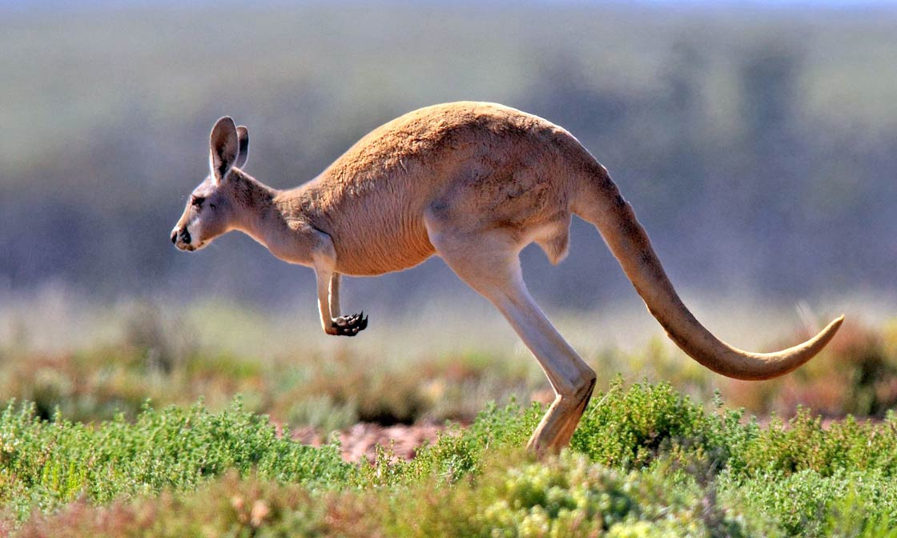
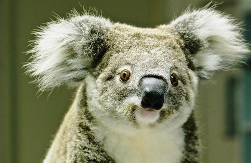
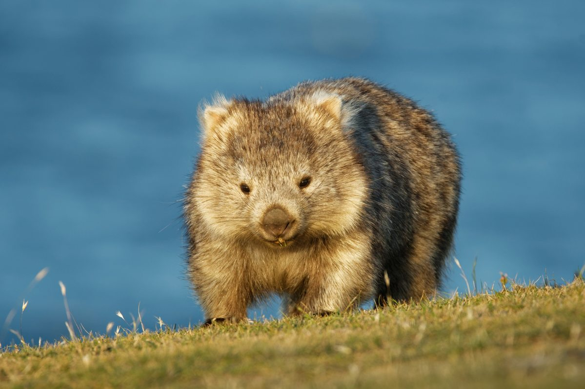
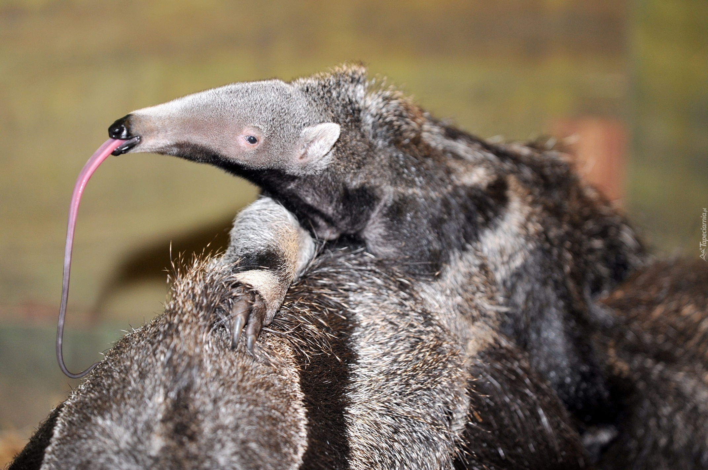
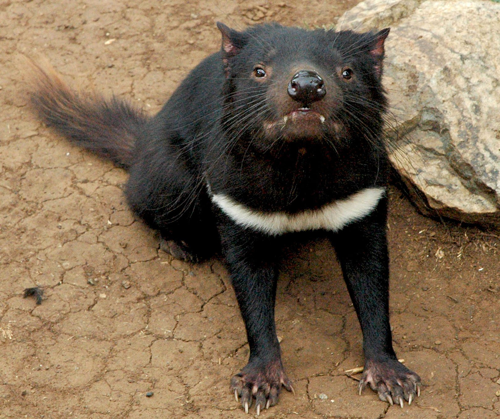
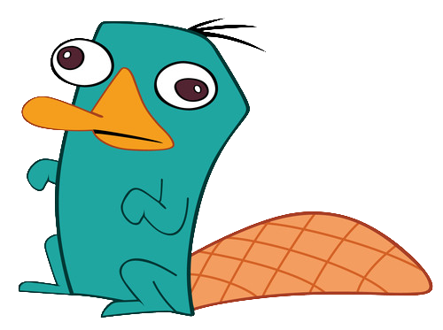
Autor: Konrad Skurpel